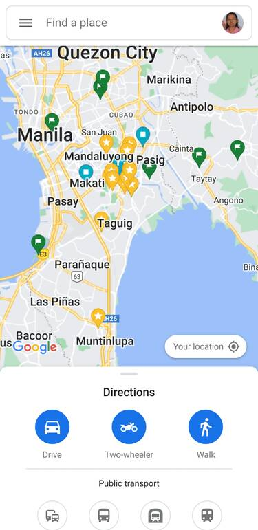

Alignment
Church of Jesus Christ
churchofjesuschrist.orgIn the church website, the header contains four elements, the navigation, logo, search button, and log-in. The page follows the principles of design by aligning these elements along a centered horizontal.
Rule of Thirds
Google Maps
maps.google.com In Google Maps, only the lower third portion of the screen displays some menus or information for the user. The upper 2/3 part displays the map with the exception of a tiny navigation menu overlaid at the top.
Fitt's Law
Nintendo
nintendo.comFloating at the bottom of the screen, Nintendo follows Fitt's Law by making the search button larger than the rest. This makes it look more important.